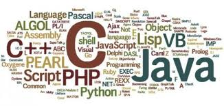
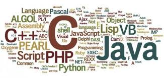

Développeuse / Développeur Web
Vous êtes passionné par l'informatique et l'univers du web et vous souhaiteriez travailler dans ce domaine ? Si vous êtes rigoureux, autonome, patient et persévérant, le métier de développeur web devrait vous convenir ! Grâce à ses compétences techniques pointues et sa grande culture web, le développeur traduit les besoins de ses clients en pages web adaptées capables d'attirer les internautes. Le métier développeur web fait partie du domaine Informatique.
 
